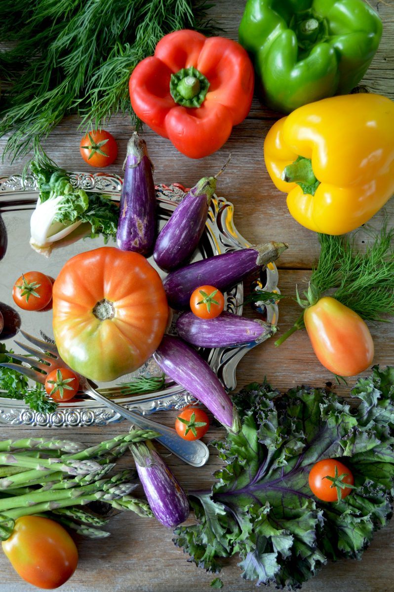

Dieta antinfiammatoria dopo i 50 anni: cosa mettere nel piatto
Di Clara Wendover · tempo di lettura 4 minuti

Dopo i 50 anni molte persone notano più stanchezza, articolazioni rigide al mattino, qualche chilo in più sulla pancia. Una parte di questi cambiamenti è legata all'infiammazione cronica di basso grado, una condizione silenziosa su cui le abitudini quotidiane hanno un peso importante.
La dieta antinfiammatoria non è una dieta restrittiva: è un modo di comporre i pasti che assomiglia molto alla cucina mediterranea delle nostre nonne.
Il piatto antinfiammatorio in 4 mosse
- Metà piatto di verdure di tutti i colori: verdure a foglia, pomodori, peperoni, carciofi, broccoli. I colori diversi portano sostanze protettive diverse.
- Un quarto di proteine buone: pesce (soprattutto azzurro: alici, sgombro, sardine), legumi, uova, pollo.
- Un quarto di cereali integrali: pasta integrale, farro, orzo, riso integrale.
- Olio extravergine d'oliva come condimento principale, più una manciata di frutta secca durante il giorno.
Cosa limitare
- Zuccheri e bevande zuccherate, dolci confezionati.
- Farine bianche e prodotti molto raffinati.
- Carni lavorate (salumi, wurstel) e fritture frequenti.
- Alcol: se lo bevi, poco e ai pasti.
Non solo cibo
Movimento regolare (anche una camminata a passo svelto), sonno di qualità e gestione dello stress fanno parte dello stesso quadro: nel programma di 28 giorni li introduciamo un passo alla volta.
Il programma completo di 28 giorni
Menù settimanali, liste della spesa e 60 ricette mediterranee facili nel libro Dieta Antinfiammatoria dopo i 50 Anni.
Scoprilo su AmazonQuesto articolo ha scopo informativo e non sostituisce il parere del medico. Se hai malattie infiammatorie, assumi anticoagulanti o altri farmaci, parlane con il tuo medico prima di cambiare alimentazione.